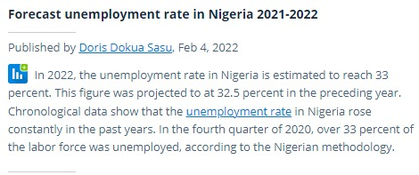

Troubling Report..
Nigeria Unemployment Rate Set To Hit Record 33.3% In Q4 of 2022, However Major Companies Are Desperately In Need Of More Skilled Workers. Here's What To Do Today..
SOURCE: Statistica.com
Dear Employee, Students and Job Seekers.
Over the past few years, the Nigerian labour market has seen a massive surge in the
rate of unemployment and according to study, this has been as a result of two major
factors.
First is the introduction and birthing of new technology..
With the birth and introduction of new technologies like Artificial intelligence (AI),
Deep Learning (DL) Machine Learning, IoT (Internet of Things) and the likes,
technology is fast replacing everyday human tasks.
Here's an example from the banking industry..
As you might have noticed, ATM's are fast replacing cashiers, in that you can now
simply find ATM machines around you where you can easily perform simple banking
tasks ranging from cash withdrawals and bank transfers to more complex tasks like
cash deposit.
With these rapid changes, the smart question should be, what then happens to the
cashiers?
Well, as you might have noticed, many of them had to be laid off.
Same thing with the customer service department.
Machines are now responding to customer queries and resolving issues at a far
faster pace than humans without being tired, taking days off, asking for vacation, or
even asking for a raise.
Faced with these, employers are forced to opt for the easier route.
Which has to do with embracing more of technology and narrowing down on human
intervention which has invariably led to the massive increase in unemployment.
And this is not just happening in the banking industry, but across every known sector
you can think of.
Letting you know that in today's labour market, you are competing less with humans
and more against machines.
Secondly and even more sad is the fact that..
As technology is being embraced at scale, organisations are demanding a new kind
of skill set.
One that allows them to tackle current organisational challenges in a more informed
way.
Because as much as technology has made life easier, it has also created new
problems, and solving these problems will require a new certain kind of skill set which
unfortunately are not taught in our tertiary institutions.
And according to study from indiaemployerforum.org , unemployability now
possesses an even more greater challenge than unemployment.
To prove this, let us take a look at the area of data analysis.. The “Collection,
Processing and Interpretation of Data”
Take a look at this JUNE 2022 report from www.business.com
Here's another one from Business Essentials..
In a recent interview, Thomas Goulding, Professor for Northeastern's Master Of Professional Studies In
Analytics Program had this to say..
What does this tell you?
Well, I'm sure you know by now.
It is the fact that there is a massive shortage in the field of Data Analysis across
industries and organisations are more than willing to pay through their noses to get professionally
trained data analysts and desperately retain them.
With that said, the next logical question becomes…
“How Can I Become a Professional Data Analyst”?
While there are many free online courses you can find on YouTube which you can
take.
It is expedient you understand that organisations are very particular about where
you obtained the skill and your certification from, especially when you see how much the field is almost
being adulterated.
Hence, aspiring data analysts and corporate brands have embraced qualified and
certified data analytics training firms to receive proper training.
In a bid to help you acquire a high paying soft skill that will help you secure a high paying job and
also help you boost your portfolio that will give you an edge in the current labour market.
BYS Graduate School In Collaboration With Lead Leap Consulting is offering a…
1-Month Intensive ALL IN ONE Data Analytics Training Using Microsoft Excel, Power BI, & SQL.
Having trained and equipped well over 200,000 students (both offline and onsite)
across Nigeria, United Kingdom, Canada, Kenya, United States Of America, and
Australia with the finest, on-demand digital soft skills and trained a handful of
popular household brands like..

We are proud to say that when it comes to the area of human capacity development, we are a leading
organisation.
And this October we are opening up the opportunity for aspiring data analysts like you to learn
intensively, Master, and earn a certificate as a Certified Data Analyst.
This training is scheduled to run throughout the month of October, 2022. and will hold during the
weekends so this doesn't collide with your working hours.
Classes will be 100% online while residents in Yenagoa, Bayelsa state can attend virtually at our
training facility.
Many of our past students who are doing very well came in with no IT or Programming background , yet
they were able to learn super fast and are working in several organisations across various industries.
So..
If you are sick and tired of walking under the fiercing heat of the sun with your brown envelope in
search of a job..
If you are desperately tired of jumping from one job opportunity site to the other with nothing to show
for it..
If you are tired of watching your colleagues being promoted while you are there watching in hope, pain
and frustration..
If you are tired of receiving the same salary year after year, over and over again while bills are
expenses are steadily skyrocketing.
Then click on the link below to download a FREE Course Outline containing full details about the
training and one of our consultants will get across to you.
Hurry Now…
For the Month of October, we are partnering with BYS Graduate School (a private human capacity development organisation) to subsidise a whopping 67% discount on our training FEE to a small group of persons.
The subsidised rate is however available to ONLY 12 Persons.
To qualify for this discount offer…
Kindly follow the instructions below:
Fill in your details below and Download the FREE course outline and go through it completely.
Make up your mind if you are willing and ready to make the discounted financial and time commitment for the training.
Once you are clear that you will like to go ahead with this, look at the last page of the course outline and you will find your SECRET UNIQUE DISCOUNT CODE. Text that code to 08025131514 via SMS.. (I'll advise you copy or screenshot this page)
As soon as you have completed this process, you will receive a reply from one of our training
consultants within 30 minutes scheduling you for a 15minutes interview session to see if you qualify for
this discount offer.
The training cost N450,000 (four hundred and fifty thousand naira only)..
However if you do qualify after the interview session, you will not have to pay that amount, but just a
fraction investment of N150,000.
That's a whopping N300,000 naira paid for by BGS Graduate School.
If you do not receive a reply after 24 hours, then it means you were not among the Lucky 12.
So, click on the link below to download the FREE Course Outline and also find your SECRET UNIQUE
DISCOUNT CODE.
Best of luck.
PS: Entry closes on the …. Of …… 2022
Frequently Asked Questions
-
When is the date and time of the training?
The training will run ONLY on weekends (Saturdays and Sundays) throughout the month of October, 2022. Saturdays 10am - 4pm, Sundays 1:30pm - 5pm.
-
How much does the training cost?
The training cost N450,000 because of its intensive nature. But BYS Graduate School (our partners) are subsidising the fee for only 12 lucky students. They are paying N300,000 for you and all you have to pay is N150,000 for the complete training.
-
Can I pay installmentally?
Yes, you can pay installmentally by making an initial payment of 50% which is equivalent to N75,000 and be a part of the class, however, you will not be issued your certificate, or gain access to the support group until the balance payment has been made.
-
Is the certificate recognized?
Our Data Analytics certificate is internationally recognized and you can use it to boost your portfolio and also apply for a job anywhere and in any industry as a data analyst.
-
It is too expensive
If you feel investing N150,000 on yourself to acquire a skill that can take care of you for the rest of your life is too much, then this is not for you.
-
Will you help me get a job after the training?
After the training we will add you to our support group where you will get access to other professional and certified Data analysts. The beauty is that in that group, we share job opportunities when we have them, but we cannot guarantee you a job.
-
I don't have IT or programming experience.
So were many of our students who participated in our earlier editions but even they were amazed at how easy it was to learn when they made the commitment to learn. The training is well broken down and it is aimed at taking you from a total novice to a Data Analyst expert.
-
Where can I work as a data analyst?
There is no known industry in the world today that doesn't need a Data Analyst. From hospitality, education, banking and finances, ecommerce, health, etc. They all need data analysts and you can work in any industry.
-
I have a 9-5 job, how will I keep up with the class?
This is why we slated the classes for weekends so it does not interfere with your job (if you currently have one).